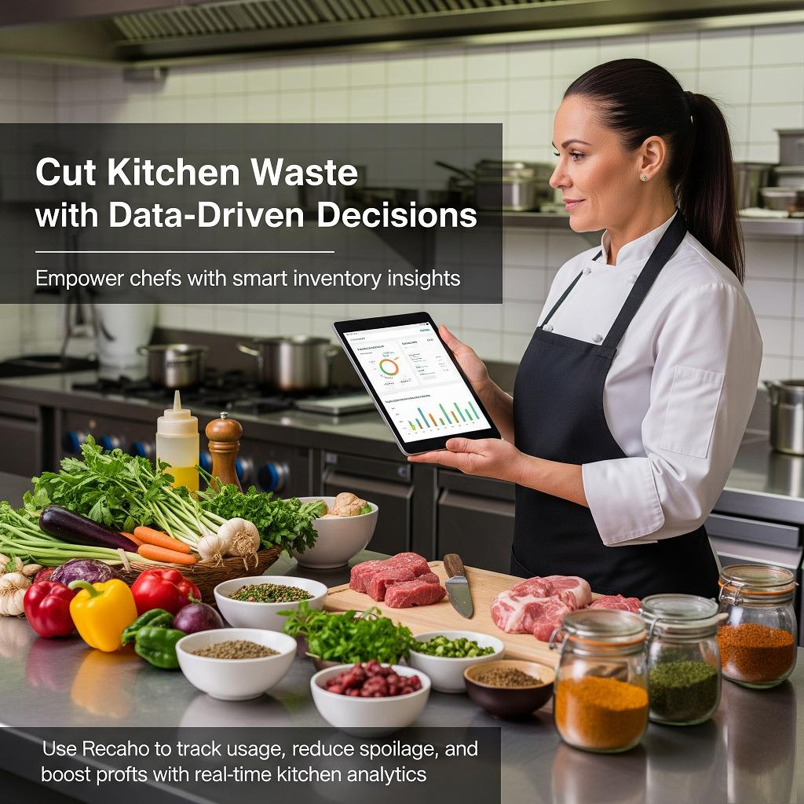
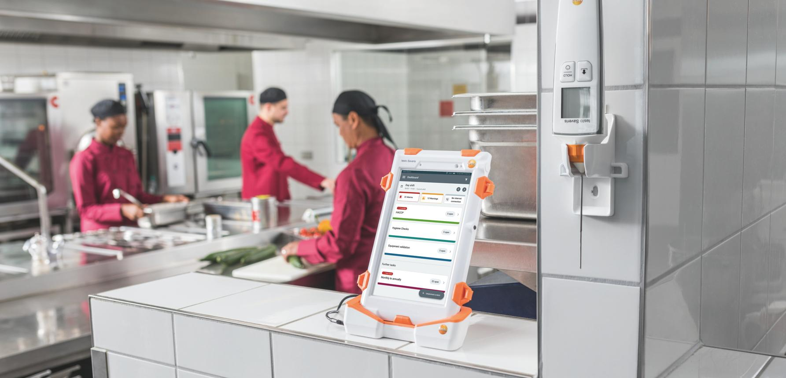

Smarter Decisions.
Less Waste.
More Freshness.
CausalDecisionIntelligence bridges the gap between kitchen production and actual consumer demand using real-time causal AI, Recipe-State Digital Twins, and GAN-driven synthetic data making every prep decision profitable.
Real-Time Operation Intelligence
UK Hospitality Wastes £3.2B Annually.
75% Is Completely Avoidable.
CausalDecisionIntelligence transforms reactive food waste tracking into proactive, real-time prescriptive intelligence protecting GP margins across NHS, universities, hotels and dark kitchens.
From Reactive Tracking To
Proactive Causal Decisions
CausalDecisionIntelligence transforms kitchen guesswork into prescriptive intelligence through a structured four-stage operational lifecycle.
Capture & Sense
IoT-enabled waste scales and POS integrations capture live kitchen production data with sub-200ms latency.

Analyse & Map Cause
The causal inference engine identifies the precise root cause: prep error, demand variance, or over-ordering.
Prescribe & Alert
Real-time production commands delivered directly to front-line kitchen staff "Reduce batch B by 20% now."
Monitor & Evolve
Continuous feedback loops improve the causal models, protecting GP margins and generating ESG compliance reports.
Three Core Systems.
One Intelligent Kitchen Platform.
CausalDecisionIntelligence is a cloud-native, causal-AI SaaS platform integrating directed acyclic graphs, GAN-driven synthetic data, and recipe-state digital twins designed for NHS, universities, hotels, and dark kitchens without requiring data science teams.
Causal Intelligence Graph
Proprietary DAG-based engine identifies the specific root cause of every gram of waste prep error, demand spike, over-ordering, or holding failure.

Recipe-State Digital Twin
Models every ingredient through preparation, cooking, and holding stages identifying "yield leakage" before food reaches the customer or the bin.

GAN Synthetic Data Engine
Generative Adversarial Networks create synthetic kitchen datasets, solving the "Cold Start" problem for new sites with zero historical data.